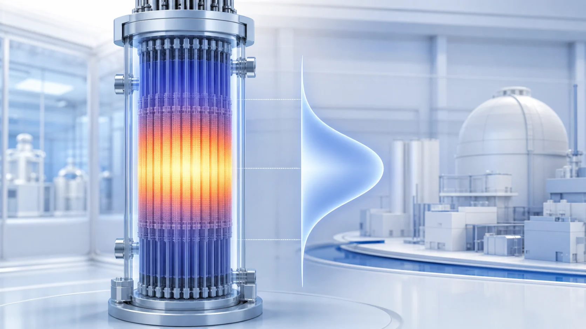
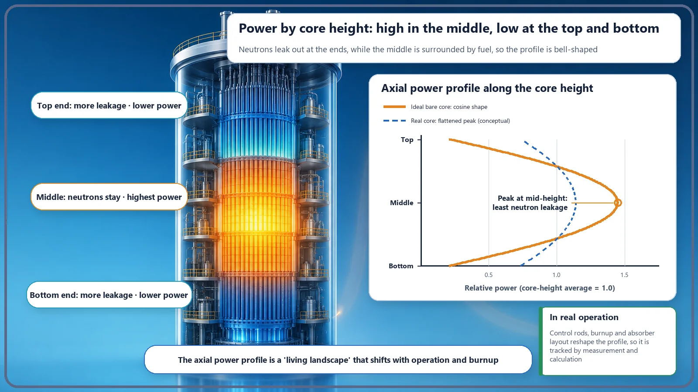
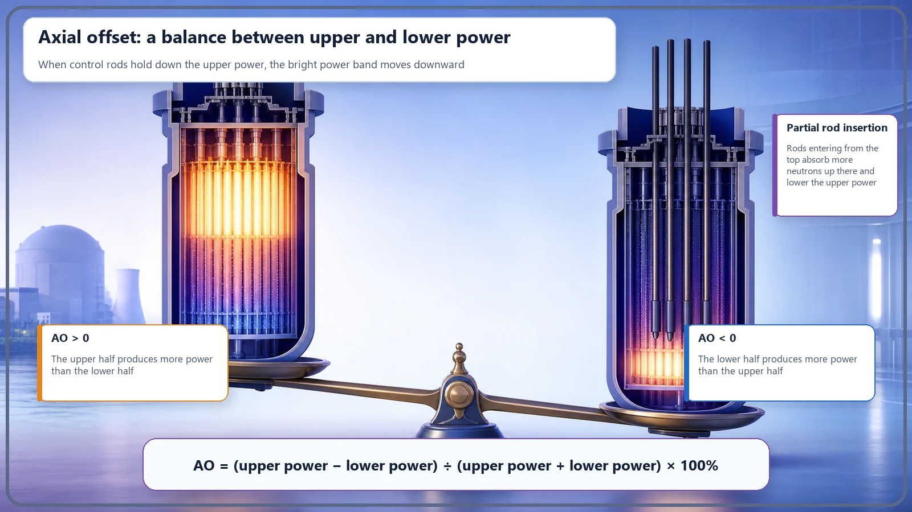

Long-Term Core Behavior & Fuel Cycle · 167
The Busiest Floor Is in the Middle — Reading the Axial Power Distribution Up the Reactor Core
Scan a reactor core from bottom to top and the power is not the same at every height; the middle floors are the busiest, and the bright band can lean up or down.

The axial power distribution describes how power varies with height in a reactor core. In an idealized core it is roughly cosine-shaped, peaking at mid-height where neutron leakage is smallest. Control rods, coolant temperature and burnup push the bright band up or down, and operators summarize that lean with one number, the axial offset (AO).
Picture one long fuel rod standing upright inside a reactor, identical from end to end. Are its top, bottom and middle all equally hot? "Same rod, same heat," you might think. Not at all: the same rod gives off quite different amounts of heat depending on the height. Today we'll look at exactly that: the axial power distribution, which describes how power is spread out as you scan the core from bottom to top.
Think of the core as a tower block
Imagine the reactor core as a multistory building. The core really is a fairly tall cylinder, about 4 meters high. On every floor, fission produces heat, in other words power, and some floors are brightly lit and busy while others are comparatively quiet.
A picture of "how brightly each floor (each height in the core) is lit right now," that is, how power is distributed with height, is the axial power distribution. "Axial" refers to the axis that runs vertically through the core, so it simply means the up-down direction. (For reference, the distribution you see when you slice the core horizontally, across its cross-section, has its own name: the radial power distribution. Today's star is the vertical one.)

Why is the middle the busiest?
So which floor is the brightest? Interestingly, in an idealized core with no special adjustments, the middle height is brightest, and it gets dimmer toward the top and the bottom. You get a gently bulging bell shape, or in mathematical terms, something close to a cosine curve.
The reason is simple. Fission needs plenty of neutrons staying in the core. At the top and bottom ends of the core, neutrons easily escape to the outside (this is called leakage). The middle, by contrast, is surrounded on all sides by fuel, so that's where neutrons gather most. Fission is more active where neutrons are plentiful, so naturally the middle floors are the busiest.
Real power plant cores, however, deliberately smooth this bell into a somewhat flatter shape. If the peak is too sharp, that one spot gets excessively hot, so at the design stage engineers vary the fuel composition slightly with height or keep control rods partly inserted to press the peak down. So think of "roughly cosine-shaped" as the starting picture only; the actual shape during operation is gentler than that.
The bright band can lean up or down
The important thing is that this bright band doesn't always sit politely in the middle. For various reasons it can lean toward the top or the bottom. Let's see what pushes and pulls it.
First, control rods. In a pressurized water reactor (PWR), control rods are inserted from above the core, moving downward. Inserting them partway is like switching off the upper floors' lights, so the bright band shifts down; withdraw them and the upper floors recover. This is operators' most direct handle on the axial distribution.
Second, the temperature of the coolant (which is also the moderator). Water enters at the bottom of the core and heats up as it rises. So the higher you go, the hotter and thinner (less dense) the water becomes, and thinner water is less effective at slowing neutrons down, which is what helps fission. As a result, the upper part tends to become a little quieter, which acts to push the distribution slightly downward.
Third, burnup, the effect of the fuel being used up. The floors that work hardest use up their fuel fastest, so over an operating cycle the bulging middle is consumed first and pressed down, and the shape changes gradually over months. The axial distribution is a living landscape, not a fixed one.
One more point: in a tall core, once the band has leaned to one side, it can slowly slosh up and down. Because xenon, a powerful neutron-absorbing substance, takes time to build up and disappear, power can swing upward and downward with a slow period of around a day. Operators watch for this sloshing and calm it down.

Tilted up or tilted down? One number tells you
There's an indicator that sums up this lean in a single number: the axial offset (AO). Divide the core neatly into an upper half and a lower half, then compare the power of the two halves like this:
AO = (upper-half power − lower-half power) ÷ (upper-half power + lower-half power) × 100 (%)
If the upper half is brighter, AO is positive (+); if the lower half is brighter, it's negative (−); if the two are evenly matched, it's close to 0. A seesaw makes it easy: the upper half and the lower half sit on opposite ends, and AO is the gauge telling you which way, and how far, the seesaw is tilted right now. Operators adjust control rods and other means to keep this gauge within a set target range, keeping the core settled.
Words that look alike but aren't
First, axial and radial power distributions run in different directions. Axial is up-down through the core (height); radial is across the core's cross-section (horizontal). Both are slices of one three-dimensional power landscape, taken in different directions.
Second, it's a problem to use the power distribution and the peaking factor as if they meant the same thing. The power distribution is the "whole shape" of the core's power landscape, while the peaking factor is a summary number extracted from it: "how many times the average is the highest peak?" The axial offset is another summary number, but it describes not the height of the peak but which way, up or down, it leans.
Finally, a common misconception. Boric acid (boron) dissolved in the coolant spreads fairly evenly through the whole core, so on its own it doesn't directly tilt the distribution up or down. Boron's job is to adjust the reactivity level of the whole core; axial lean comes mainly from control rods, temperature and burnup.
So why should we care?
There's a clear reason to look this closely at the axial power distribution: the fuel at the height where power concentrates is the hottest. If the distribution leans heavily to one side, that spot overheats locally, and the temperature and heat margins that the fuel and coolant can tolerate shrink accordingly. That's why designers build cores so that the distribution comes out flat and stable from the start, and operators manage it by watching the control rods and the axial offset so it stays within the target range. This "power landscape by height" is a useful key to why plants are designed and operated so carefully.
Today's takeaways
- The axial power distribution describes how the power produced at each height is distributed when the core is viewed in the vertical (height) direction.
- In an idealized core with no adjustments, the middle, where neutron leakage is smallest, is brightest and the ends are dimmer, giving a roughly cosine (bell) shape; real cores smooth this into a flatter shape.
- The bright band leans up or down depending on control rod position, coolant temperature and burnup, and it's a living landscape that changes gradually throughout operation.
- Whether it leans up or down is summarized and managed with a single number, the axial offset: AO = (upper half − lower half) ÷ (upper half + lower half) × 100%.
- Because the place where power concentrates is the hottest, keeping the axial distribution flat is directly tied to safety margins, operation and design.